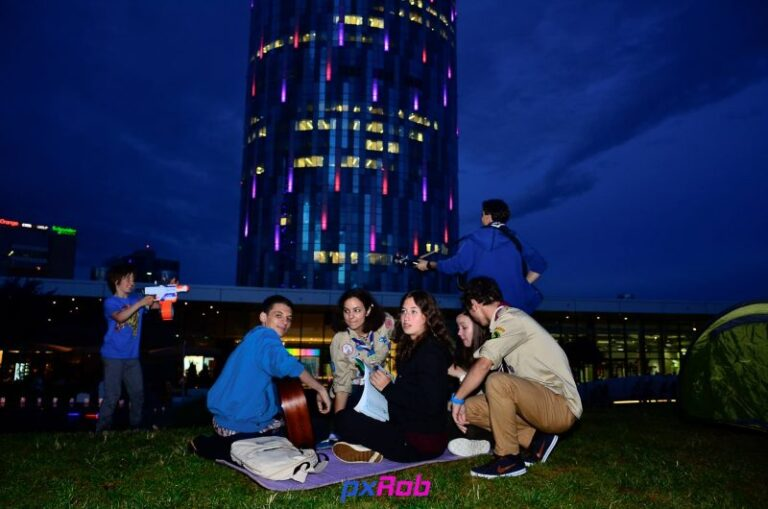

Seara Cercetașilor la Mall Promenada

Ţi-ai imaginat vreodată cum arată o seară a cercetaşilor? Sau dacă ești deja cercetaș, îți amintești o noapte în camp demnă de povestit? Ei bine, și noi la Mall Promenada am încercat să reproducem atmosfera unei seri de camp de care suntem cu toții fermecaţi. Hai să vă povestesc cum a început totul…
În luna aprilie am primit propunerea de a ține o activitate pe terasa mall-ului, pe care am acceptat-o cu brațele deschise. A durat ceva până am găsit o zi care să se sincronizeze cu orare ambelor părţi, dar odată stabilită a început gândirea și organizarea evenimentului.
Împreună cu ceilalți coordonatori, dar în special cu cel al departamentului de activități, au fost alese atelierele de facepainting, de noduri, de confecționat gulgute, pânza de dorințe si baloane gigantice de săpun. Şi cum altfel să aduci mai bine atmosfera cercetăşească, dacă nu cu muzica specifică? Pentru asta, ne-am mobilizat cu 2 chitariști, cu vocile au contribuit toți și astfel terasa a răsunat de muzică și voie bună.
Ca orice eveniment care se respectă, am avut și promovare, la care a contribuit şi echipa de la Mall Promenada. Cu aceasta ocazie le mulțumim pentru spotul radio și publicitatea de pe site-urile de socializare!
În seara de 3 iunie, terasa mall-ului a fost plina de specificele noastre gulguțe, devenite deja un simbol al cercetaşilor. A fost o seară care s-a ridicat la așteptările noastre și cu siguranță o vom repeta cu următoarea ocazie. O altă realizare pentru noi este aceea că, acest eveniment a fost coordonat în totalitate de exploratori.
Cu ajutorul evenimentelor de genul acesta, noi facem cunoscută oamenilor adevărata faţă a cercetăşiei şi le expunem farmecul cele mai mari mişcări de tineret din lume – bucuria lucrurilor mărunte. De aceea ne dorim să stârnim interesul cât mai multor persoane, care să ni se alăture în crearea unei lumi mai bune!
de Ana Iulia Vătau